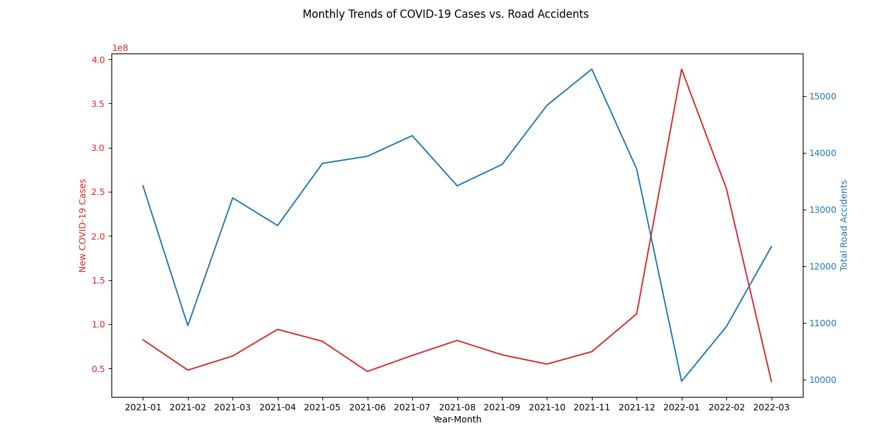
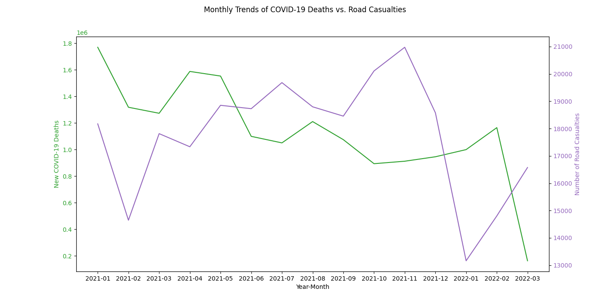
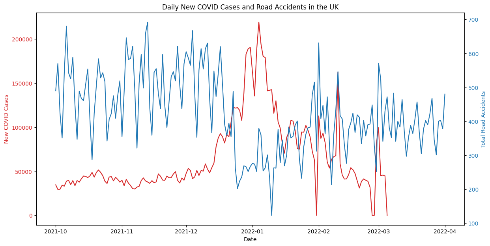
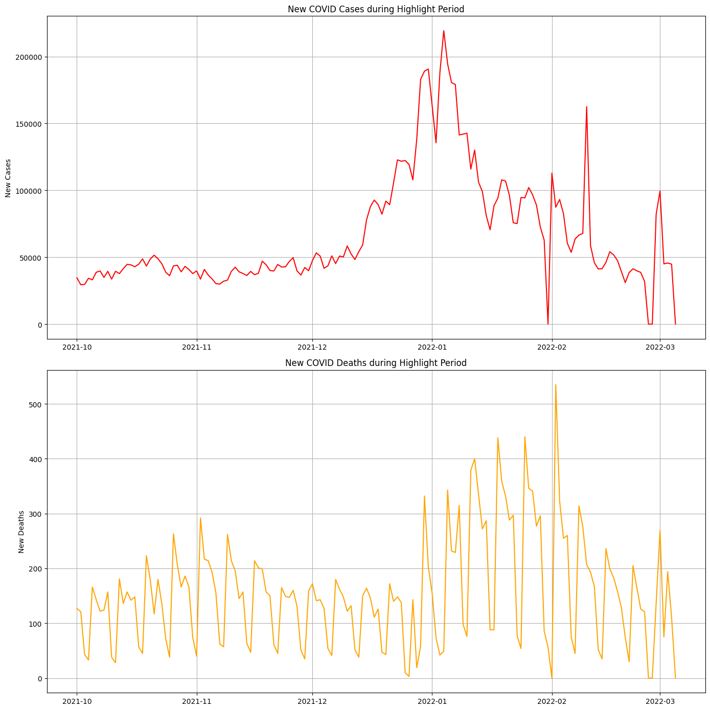
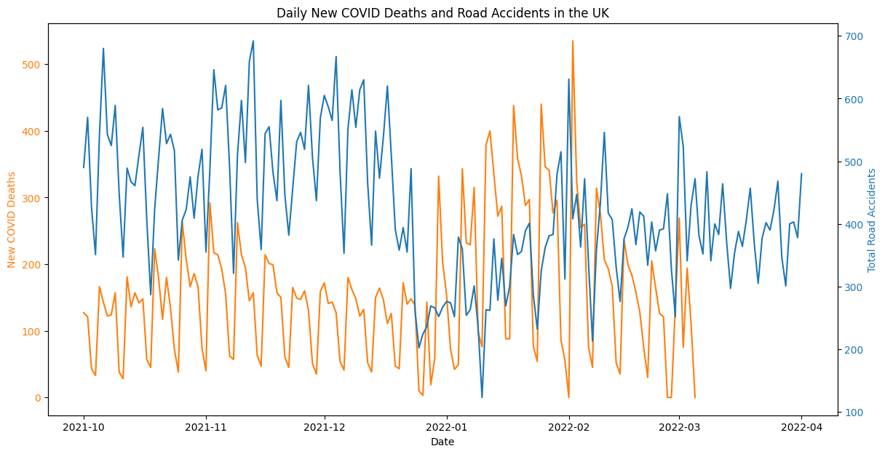

This visualization presents a temporal analysis of daily new COVID-19 cases globally. The data starts from the early 2020 and includes data points related to 2022. A notable feature of this graph is the peak in January 2022, signifying a surge in COVID-19 cases which we assume because of the new varient and the seasonal changes. if we hover on the dots on top of the line chart we can see the details like total number of new cases up untill that point in time. Following the January peak, there's a visible downward trend, which shows a decrease in the number of new cases reported daily. This trend is associated with various factors like vaccine rollouts, natural declines in infection rates, the implementation of public health measures. The graph is useful to show the trends of the pandemic over time.
Below are interactive dashboards created using Power BI that provide detailed visualizations related to COVID-19 and road accident data.
using Power BI we created alot of visualizations which graphically shows a lot of insighs into the worlds data during the covid 19 years. here you can see details like population density in all the continents by year, number of hand washing facilities over time, reproduction rates during the years 2020, 2021, and 2022. we also went a head and presented a lot of visualizations.This bar chart shows the monthly sum of the the handwashing facilities from the beginning of 2020 through March 2022. It is clearly evident from the data that the number of handwashing facilities was quickly increased in the early months of 2020, this shows a fast response by the leaders on hygiene due to the COVID-19 pandemic. The bars represent the sum of handwashing facilities available, and we can observe a significant increase as the months progress, reaching a peak in July of 2020. This increase aligns with global health advisories promoting frequent handwashing as a key preventative measure against the virus. After the initial surge, the numbers stabilize, which suggests that the required number of handwashing facilities were established. However, there's a noticeable dip in March 2022, which could be because of of reduced need for such facilities as the situation with the pandemic cooled down.
We used Power Bi to create the following charts.these charts cover details like sum of Number of casualities by accident date, count of accidents in each junction.here the title is little bit different because we used the accident record and accident date to calculate the totla number of accidents, then we shown a pie chart which shows the number of casualities by year. This line chart, which forms part of our Road Accident Data Dashboard, portrays the sum of casualties from road accidents over the course of nearly two years, starting from January 2021. The data oscillates considerably, indicating the daily variability inherent in such incidents. Peaks and troughs are scattered throughout the timeline, suggesting no clear pattern or seasonality in road accident casualties over the months. It's interesting to note that while there are spikes that suggest days with unusually high numbers of casualties, the data does not show a sustained increase or decrease over time. This could imply that despite various road safety initiatives, the daily risk of accidents resulting in casualties has remained relatively constant throughout this period. The visualization serves as a stark reminder of the persistent challenge road accidents pose to public health and safety, and the need for ongoing efforts in policy, infrastructure, and public awareness to reduce their occurrence and severity.
These Plotly frames provide dynamic plotting capabilities for in-depth analysis of the data. the visualization shows the interactive total new cases and New deaths for selected countries like Brazil, india, italy and US. This bar chart presents a comparative overview of total new COVID-19 cases and new deaths in Brazil, India, Italy, and the United States. Each country is represented by two bars – the blue bar for new cases and the red outline representing new deaths. Notably, the United States shows the highest number of new cases among the displayed countries, which significantly surpasses those of Brazil, India, and Italy. While the red outlines for new deaths are quite small compared to the blue bars for new cases, indicating a lower mortality rate relative to the number of infections, they do provide critical insight into the severity of the pandemic's impact in each country. The chart is interactive, likely allowing viewers to hover over the bars for exact figures and perhaps click through to more detailed data. This visualization is crucial for understanding not only the spread of the virus but also the effectiveness of each country's response in terms of healthcare outcomes.
The following visualization are made using seaborn to show the comparative trends in number of road accidents over time and the total new cases over time we can see a clear pattern that shows the number of totla accidents decreased as the number of covid cases increase this shows that the lockdown measures had an effect on the accidents count.
The following visualization are made using seaborn to show the comparative trends in number of road accident deaths over time and the total new cases over time .
These visualizations highlight specific periods for a detailed comparison between COVID-19 case and death trends versus road accidents.
 This line graph shows an inverse relationship between daily new COVID-19 cases and road accidents. The blue line, representing new COVID-19 cases, shows a significant surge, showing the pandemic's escalation during these months. Meanwhile, the red line, denoting road accidents, exhibits a noticeable decrease in the same time. This trend suggests that as COVID-19 cases rose, due to a variant wave and seasonal effects, there have been stricter restrictions to stay indoors, leading to fewer road accidents. This data provides valuable insight into how public health crises can indirectly affect road safety, potentially informing policy decisions during similar future events.
